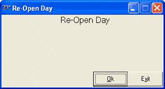

This option is used when the current day’s operations are closed by the CLOSE DAY option and it is necessary to reopen that date again for further processing.
How to reach: Setup > Supervisory Functions > Re-Open Day
The Re-Open Day window is displayed.

Note: The Re-Open Day option can be used to re-open the last closed Shoper date only. It cannot be used to re-open dates which are older than the current Shoper date.